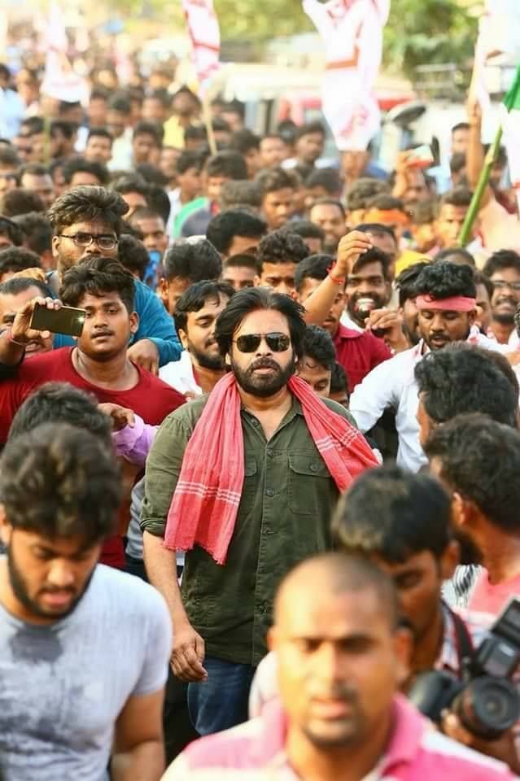

Birth : 2 September 1971 in Bapatla, Andhra Pradesh.
Awards :Filmfare Award for Best Actor – Telugu for Gabbar Singh
Parents : Konidela Venkata Rao and Anjana Dev
Occupation :Actor, writer, Film, Producer, Politician, Director, Choreographer, Stunt, director ,Singer,A great political leader.
POlitical party : JanaSena

1. “The revolution is not an apple that falls when it is ripe. You have to make it fall.”
2. “I never wanted to become an actor. I always wanted to be a farmer and dreamt of owning half an acre of agriculture land.”
3. “I’m Indian. I care for our Motherland.”
4. “If I do not respond to some situation, my conscience kills me. I believe in permissible violence, not necessarily non-violence.”
5. “I don’t believe in planning for things. I just want them to fall in place, unfold as they like. I never design things. I want films to choose me; I don’t choose films.”
6. “Life is bigger than cinema. Cinema is just a part of life, so I never take success or failure seriously.”
7. “Nature, philosophy and social issues are the three things that always occupy my mind. You do not have any power over others but can only change yourself.”
-Some great words by Pawan kalyan
Biography
Early Life
Kalyan was born as Konidela Kalyan Babu on 2 September 1971 to Konidela Venkata Rao and Anjana Devi in Bapatla, Andhra Pradesh.
He is the younger brother of Chiranjeevi and Nagendra Babu. He started using the name "Pawan" after a martial arts presentation he organized to demonstrate his training.
He holds a black belt in karate.
Kalyan made his acting debut in 1996 with Akkada Ammayi Ikkada Abbayi - Then following blockbusters include Badri,thammudu,kushi,Tholiprema,jalsa,gabbar singh,Atharintiki daredhi,vakeel sab , bheemla nayak many more in his film career.
Political career
Kalyan started his political career in 2008 as the president of Yuvarajyam,the youth wing of Praja Rajyam Party which was started by his elder brother Chiranjeevi.
Kalyan founded a political party named Jana Sena Party on 14 March 2014. He wrote a book titled Ism which is also the ideology of the Jana Sena party.
He provoked the Uddanam kidney disease crisis by various protests and a hunger strike, which was later controlled by the Government of Andhra Pradesh by constructing dialysis centers and implementing various schemes for the village.
The Jana Sena Party has contested 140 constituencies in the 2019 Andhra Pradesh Legislative Assembly elections. Kalyan has contested two constituencies – Gajuwaka and Bhimavaram.
Unfortunately lost in 2019 election and aiming for the 2024 elections with full power in return.
Things to know
Kalyan was invited to Harvard University to deliver a speech in 14th edition of India Conference 2017 along with Madhavan.
Founder of JanaSena Party. janasena means "people's Army"
Pawan Kalyan is an all rounder. He is an Actor, Director, Choreographer, Screenwriter, Singer, Stunt Co-ordinater, Writer and also a Politician.
Pawan Kalyan was the first person from South India to endorse Pepsi Campaign
Pawan Kalyan is an Ardent Admirer of Che Guevara.
His fourth film “Tholi Prema” won the National Film Award for Best Feature Film in Telugu and also bagged Six Nandi awards
Film career-awards
Best actor for male - gabbar singh -- CineMAA Awards 2013.
Winner of Filmfare Award - Telugu Film Industry Best Actor 2013
Best actor in leading role -South Indian International Movie Award 2013s.SIIMA
best actor for gabbar singh -Times of India Film Awards 2013
His fourth film “Tholi Prema” won the National Film Award for Best Feature Film in Telugu and also bagged Six Nandi awards
To find out more about pawan kalyan , visit pawan kayan fans all over the world